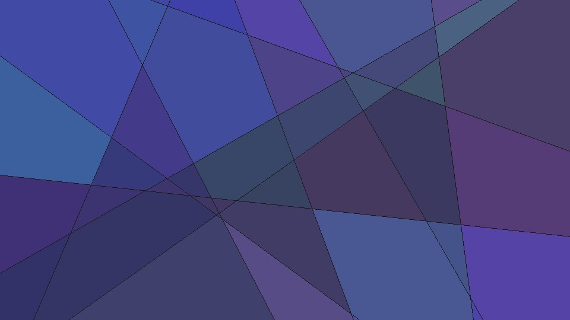
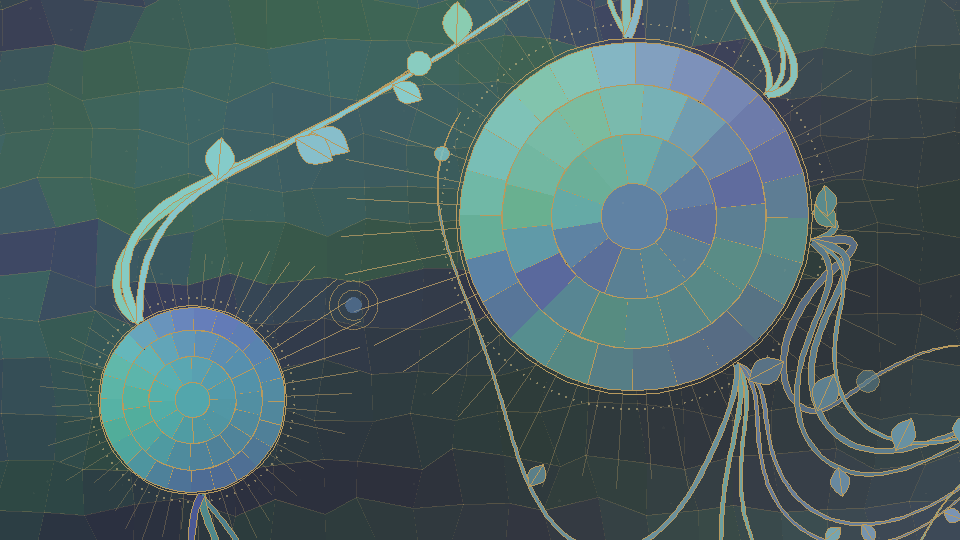
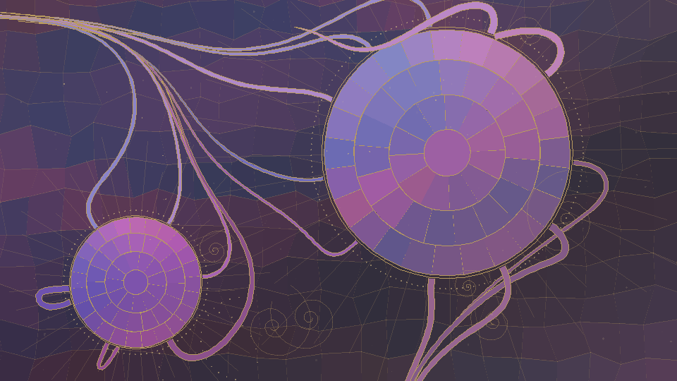
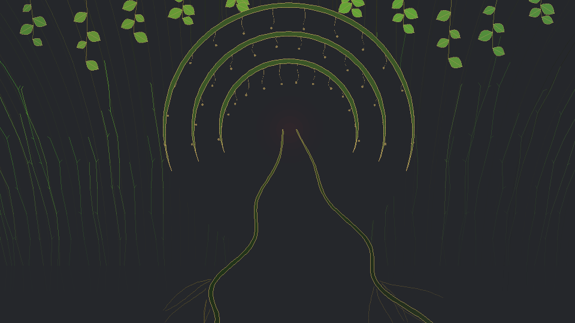
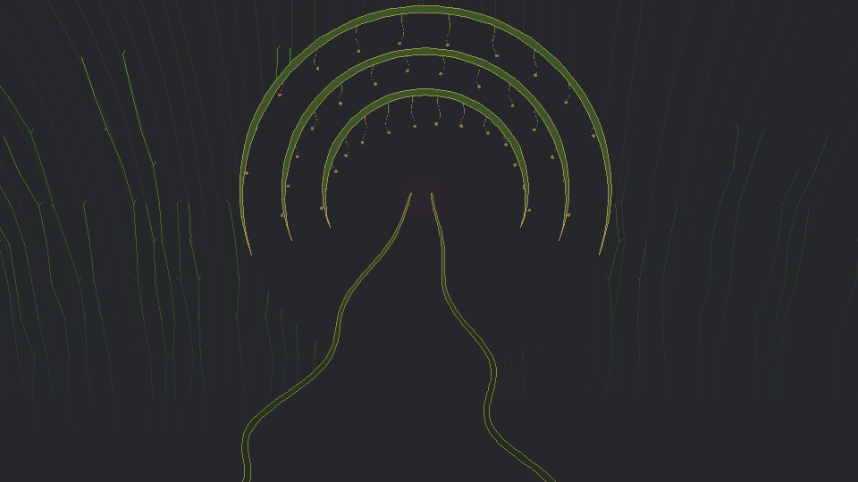

Generative, ever-shifting animated wallpapers. Each is a single self-contained page — no framework, no network — that also installs as a Wallpaper Engine module. Colors drift slowly and the composition never quite repeats.

Leaded lines drift across the canvas; the panes they form fill with slowly shifting harmonic color, transitions smoothed so panes never flicker.

Leafy, budding vines sprout in clusters from two haloed roundels whose gold sunbursts reach toward a drifting meeting point, all over a muted mosaic field.

The earlier, airier composition: gold-outlined vines splay from two concentric halos over a mosaic field, with filigree scrolls and drifting motes.

A surreal Art Nouveau forest: two ribbons wind down from a tapered, gold-dripping ring crown — a path converging to a far point and twin trunks at once — breathing in sync over a forest of vined, swaying trees in earthy greens, golds and umbers.

The original Heartwood composition, kept as its own wallpaper: the winding path/twin-trunks, the tapered gold-dripping ring crown, and the vined forest — without the roots and canopy of the flagship.
.zip and use Wallpaper Engine's Open from file to import it. Each exposes a Scheme Color (background) property.